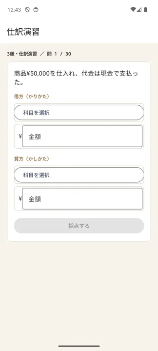
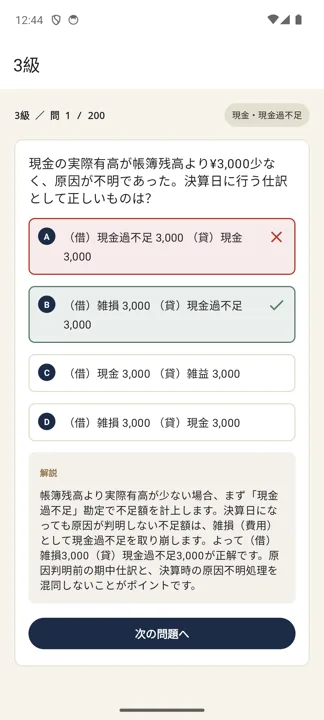
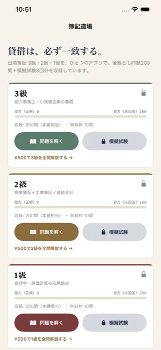

日商簿記 3級・2級・1級 対策アプリ
貸借は、必ず一致する。
「簿記道場」は、日商簿記検定に特化した問題演習アプリです。各級200問（全600問）＋模擬試験3回分を収録。3級には、借方・貸方を自分で選んで入力する「仕訳演習」モードもあります。オフライン学習可・広告表示なし。
アプリでできること
簿記は「仕訳が反射で切れるか」で決まります。このアプリは、その反復を最短で回すための道具です。
- 3級・2級・1級、各級200問（全600問）＋模擬試験3回分
- 3級：借方・貸方を自分で入力する「仕訳演習」モード
- 商業簿記・工業簿記の論点別に苦手を集中攻略
- 解答直後にその場で解説を確認できる「演習モード」
- タイマー付き「模擬試験モード」（各級3回分）
- 連続正解数・進捗を記録。オフライン学習可・広告なし
- 各級10問まで無料（仕訳演習は5問）。全問＋模試の解放は級ごとに¥500（買い切り・期限なし）



収録している問題は、日商簿記検定の出題区分表と会計基準に基づいて作成しています。学習の判断は最新の公式情報もあわせてご確認ください。
01合格までの学習ロードマップ
簿記は積み上げ型です。前の段が抜けると次の段が崩れます。順番を守るのが最短ルートです。
3級：簿記一巡を体に入れる
簿記の一巡を理解する「取引 → 仕訳 → 転記 → 試算表 → 決算整理 → 精算表 → 財務諸表」という1年の流れを、まず言葉で説明できるようにする。
仕訳を反射化する現金・売掛金・買掛金・費用収益の基本仕訳を、勘定科目を見た瞬間に借方・貸方が出るまで。簿記道場の仕訳演習モードが担当する部分。
決算整理をパターンで覚える売上原価、貸倒引当金、減価償却、経過勘定（前払・未収など）。ここが3級の山場。
精算表・財務諸表を時間内に作る本試験は60分・大問3問。第3問（精算表・財務諸表）を時間内に埋めきる練習を模擬試験モードで。
2級：工業簿記から固める
2級は商業簿記（連結会計・税効果会計・その他有価証券など、論点が重い）と工業簿記（原価計算・CVP分析・標準原価計算）に分かれます。工業簿記は範囲が狭く満点を狙える分野なので、先に固めると得点が安定します。商業簿記は連結会計を重点的に。
1級：長期戦の設計
商業簿記・会計学・工業簿記・原価計算の4科目。会計学の理論、連結・企業結合が中心です。学習期間は半年〜1年を見込み、科目バランス（1科目でも40%未満だと不合格）を意識します。
過去問・予想問題の回し方（3周ルール）
- 1周目：解いてすぐ解説。間違えた仕訳は「なぜその勘定科目か」を1行メモ。
- 2周目：間違えた問題＋迷った問題だけ。正答率80%まで。
- 3周目：直前期に全問を時間を計って。第3問・第5問など配点の大きい問題を優先。
電卓を早く打つ練習も対策のうち。本試験は時間との勝負です。普段の演習から本番で使う電卓を使い、ブラインドタッチに近い速度を目指しましょう。
02本試験までのスケジュールの組み方
ネット試験（2級・3級）なら受験日を自分で決められます。統一試験なら次回試験日から逆算します。
ステップ1：ゴール（受験日）を固定する
ネット試験なら、テストセンターの空き枠を見て今日から8〜12週間後を予約。統一試験なら6月・11月・2月の次回開催日をゴールに設定します。日付が決まると計画が具体化します。
ステップ2：受験日から逆算する（3級の例）
| 時期 | やること |
|---|---|
| 受験日 −1週間 | 模擬試験を2〜3回。時間配分と第3問対策の総仕上げ |
| 受験日 −3週間 | 決算整理を完成。過去問／予想問題を通しで |
| 受験日 −6週間 | 仕訳演習を高速化。基本論点の演習モードを1周 |
| 今日〜2週間 | テキストで簿記一巡を理解（暗記しない） |
ステップ3：学習時間の目安
- 3級：おおむね80〜120時間（1日1時間なら約2〜3か月）
- 2級：おおむね200〜350時間（1日1.5時間なら約4〜6か月）
- 1級：おおむね500時間以上（半年〜1年）
週次テンプレート（平日1h・休日2h の例）
| 曜日 | 内容 |
|---|---|
| 月・火 | その週の論点を演習モードで30〜40問＋解説 |
| 水 | 仕訳演習モードで反復（間違えた勘定科目を重点） |
| 木 | 間違えた問題だけ再演習 |
| 金 | 計算（減価償却・売上原価・原価計算など）を集中 |
| 土 | 大問形式（精算表・財務諸表・工業簿記）を1題 |
| 日 | 模擬試験1回（直前期）／または遅れの取り戻し |
計画には1〜2週間のバッファを。崩れても立て直せる余白が、直前の焦りを防ぎます。
03日商簿記検定の最新情報（受験ガイド）
実施は日本商工会議所・各地商工会議所。2級・3級は「統一試験」と「ネット試験」から選べます。
試験方式と日程
| 方式 | 対象 | 日程 |
|---|---|---|
| 統一試験（ペーパー） | 1級・2級・3級 | 年3回（例年6月・11月・2月）。2026年度は第173回 2026年6月14日、第174回 2026年11月15日、第175回 2027年2月28日。1級は6月・11月のみ（2月は実施なし） |
| ネット試験（CBT） | 2級・3級 | 全国のテストセンターで随時。統一試験前後に施行休止期間あり（2026年は 4/1〜4/13、6/8〜6/17、11/9〜11/18、2027/2/22〜3/3）。1級のネット試験はなし |
受験資格
なし。学歴・年齢・実務経験を問わず、誰でも受験できます。3級を飛ばして2級から受けることも可能です。
試験時間・出題形式
| 級 | 試験時間 | 出題 |
|---|---|---|
| 3級 | 60分 | 大問3問（仕訳、勘定・補助簿、精算表・財務諸表 など） |
| 2級 | 90分 | 大問5問（商業簿記3問＋工業簿記2問） |
| 1級 | 商業簿記・会計学90分＋工業簿記・原価計算90分（計180分） | 4科目 |
合格基準・合格率の目安
| 級 | 合格基準 | 合格率の目安 |
|---|---|---|
| 3級 | 100点満点中70点以上 | おおむね40%前後 |
| 2級 | 100点満点中70点以上 | 統一試験は回により10〜30%（平均20%前後）、ネット試験は35%前後 |
| 1級 | 70点以上、かつ1科目ごとに40%以上 | 10%前後 |
必ず公式サイトで最終確認を。試験日程・受験料・施行休止期間・出題区分は変更されることがあります。最新情報は
商工会議所の検定試験（日商簿記） と 試験日程カレンダー をご確認ください。本ページの数値は目安です。
よくある質問
独学でも合格できますか？
3級・2級は独学合格が十分に狙えます。テキスト＋問題演習＋模擬試験が基本の形です。簿記道場は「問題演習」と「仕訳の反復」を担当するアプリです。
ネット試験と統一試験、難易度は違いますか？
出題範囲・合格基準は同じですが、統計上はネット試験のほうが合格率がやや高い傾向です。日程を自分で選べるネット試験は、学習計画が立てやすい利点があります。
2級の工業簿記が不安です。
工業簿記は範囲が狭く、パターンが決まっているため満点を狙いやすい分野です。先に工業簿記を固めると全体の得点が安定します。
アプリはオフラインで使えますか？
インターネット接続なしで学習できます。広告表示もありません。
Android版はどこで入手できますか？
現在クローズドテスト中です。上の「テストに参加する」からGoogleアカウントでオプトインすると、Google Playからインストールできます。iOS版はApp Storeで公開中です。